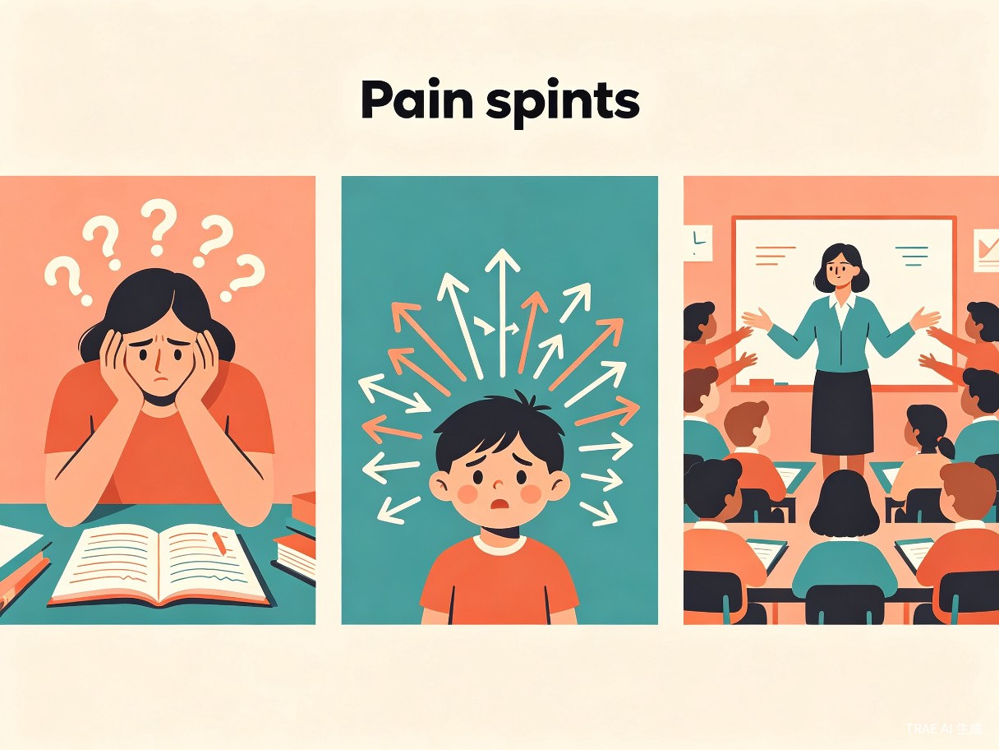
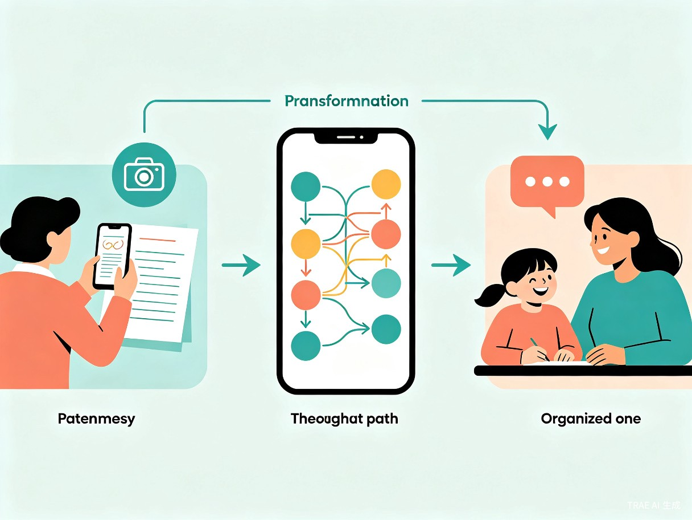
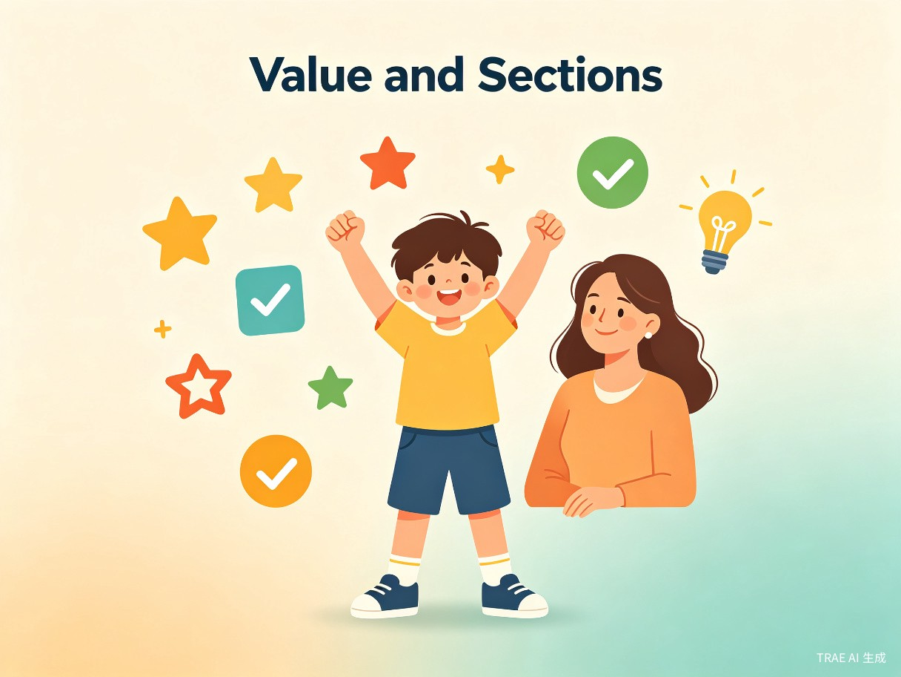

1 创意名称与介绍
创意名称：「错题思踪」—— 儿童错题思路还原工具
产品形态：搭载儿童思维归因模型的 APP / 微信小程序
解决核心问题
低年级学生的错题逻辑往往与成人认知偏差极大，错误原因天马行空、难以预判。家长和老师很难精准定位孩子的思考偏差，错题辅导常常陷入"讲了无数遍还是错"的无效循环。
创意初衷
源自家庭作业辅导的真实体感 —— 成人习惯用标准答案的逻辑反向推导错因，但低龄孩子的思维更具象、跳跃，很多"离谱错题"背后是孩子独有的认知路径。强行按成人逻辑纠正，只会让孩子越听越懵，家长越讲越急。
核心功能
拍照上传错题后，快速匹配对应知识点下低龄儿童的常见错误思路，还原孩子的解题思考过程，告诉使用者"孩子大概率是这么想的，才会得出这个答案"。
2 目标用户与痛点
面向用户
小学 1-3 年级学生家长
承担日常作业辅导任务，希望高效、准确地帮助孩子纠正错题，减少亲子冲突。
低年级一线学科教师
需要批量分析班级错题共性，精准识别教学盲区，提升课堂讲解的针对性。
使用场景

当前痛点分析
家长端
不了解低龄儿童的认知规律，错题归因只会归为"粗心""没学会"，无法精准匹配孩子的真实错误逻辑。辅导效率极低，反复沟通无效极易引发亲子冲突。
孩子端
自身表达能力有限，说不清自己的解题思路。被反复追问后容易产生挫败感，逐渐抵触错题订正，甚至害怕学习思考。
教师端
班级学生人数多，无法逐一摸排每个孩子的错题思维。只能统一讲解标准答案，难以兼顾学生的个体思维差异，教学针对性不足。
3 产品核心流程
「错题思踪」将传统的冗长辅导流程压缩为三步极简路径，让错题分析从"鸡同鸭讲"变为"精准引导"。

4 价值与意义

⚡ 效率提升：消除认知信息差，大幅降低辅导与教学成本
家庭辅导场景
产品将"家长反复试探 → 孩子表达不清 → 无效纠错"的冗长流程，压缩为"拍照上传 → 查看思路归因 → 针对性引导"的极简路径。家长无需具备专业的儿童教育知识，也能快速抓住孩子的思维偏差点，从"逼孩子改答案"转向"帮孩子理思路"，辅导效率与辅导质量同步提升。
低年级教学场景
教师可批量上传班级错题，快速定位全班学生的共性错误思路，精准识别教学盲区，及时调整课堂讲解重点。减少重复低效的习题评讲，把更多课堂时间留给知识点的深度理解，整体提升班级教学效率。
🌱 社会价值：保护儿童思维自主性，缓解家庭教育焦虑
低龄阶段的错题，本质是孩子探索知识过程中的思维痕迹，而非单纯的"错误"。这款产品跳出了传统错题工具"唯答案论"的逻辑，正视并解读孩子的差异化思考。
对孩子：建立健康学习观
帮助孩子建立"错题不可怕，错因可梳理"的健康学习观，保护其原生思维的创造力与探索欲，避免因反复被否定而丧失思考的主动性。
对家长：缓解教育焦虑
引导家长跳出分数焦虑，学会站在孩子的认知视角理解问题，减少因作业辅导引发的亲子矛盾，构建更良性的家庭教育氛围。
长期价值：双重健康成长
长期助力低龄儿童学习心理与认知能力的双重健康成长，让每一次错误都成为理解孩子思维的窗口。
5 总结
「错题思踪」不仅是一款错题分析工具，更是一座连接成人认知与儿童思维的桥梁。它让家长不再靠"猜"来理解孩子的错误，让教师不再靠"讲"来覆盖所有差异，让孩子不再因"错"而害怕思考。
核心理念：错题不是终点，而是理解孩子思维的起点。
产品愿景：让每一次错题辅导，都成为一次有温度的认知对话。